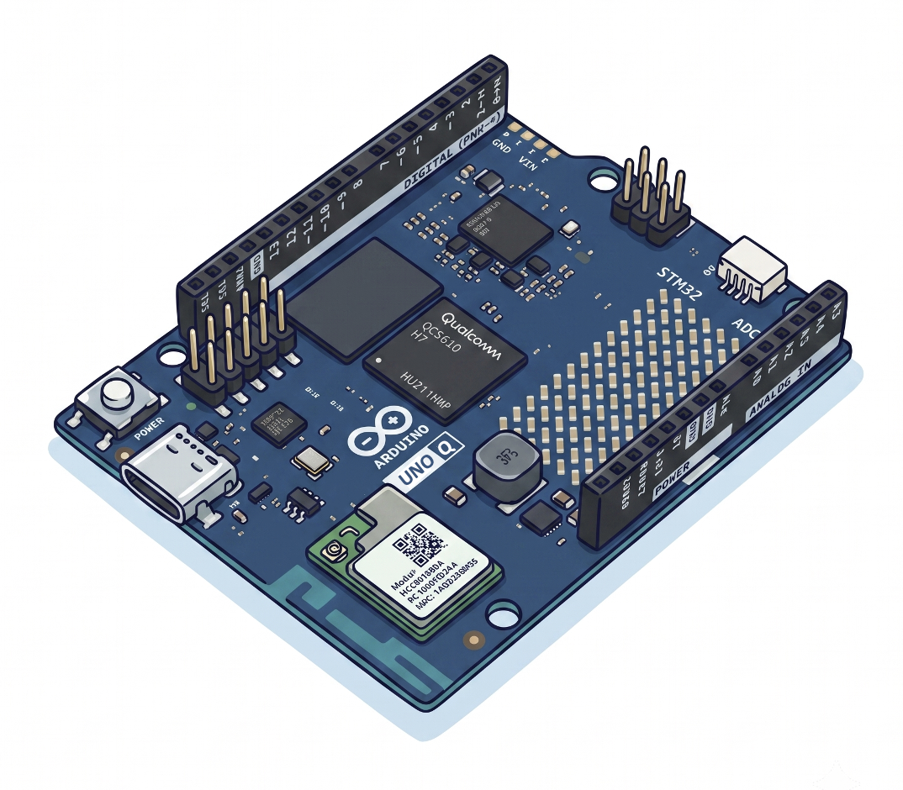

Introduction
Generative AI Leaves the Data Center
For most of its short history, generative AI has been something that happens somewhere else. You type into a browser, a request travels to a data center, a rack of GPUs does the work, and an answer comes back. The intelligence is real, but it is rented, metered, and always one network outage away from being unavailable.
That assumption is now breaking down. Models have become dramatically smaller without becoming useless, quantization has made them fit in a few hundred megabytes, and inference runtimes like llama.cpp have been optimized to the point where a language model will run on a board that costs less than a textbook. What used to require a server now runs on a device you can hold in one hand and power from a USB-C port.
This book is about that shift, and about one board in particular.
The Arduino UNO Q

The Arduino UNO Q is an unusual piece of hardware. In the familiar UNO form factor, it carries two processors that work at the same time:
- A Qualcomm Dragonwing™ QRB2210 microprocessor — quad-core Arm Cortex-A53 at 2.0 GHz — running full Debian Linux. This is where Python runs, where models are loaded, and where inference happens.
- An STM32U585 microcontroller — Arm Cortex-M33 at 160 MHz — running the Arduino Core on Zephyr. This is where deterministic, real-time control of pins, sensors, and actuators happens.
The two are connected by Bridge, Arduino’s RPC layer, which lets Python on the Linux side call functions inside a running Arduino sketch, and the reverse.
That combination is what makes the UNO Q interesting for this book. A Raspberry Pi can run a language model, but it has no real-time companion. A microcontroller can respond to the physical world in microseconds, but it cannot run a transformer. The UNO Q gives you both on one board, which means a small language model can reason about a situation and something physical can happen as a result — a servo moves, a matrix lights up, a relay closes — without a cloud round-trip or a second device.
Throughout the book we call this the dual-brain architecture, and it shapes nearly every project here.
One Board Where Three Used to Be
If you have taught or taken an edge AI course before, you know the hardware usually arrives in tiers, each with its own board and its own toolchain:
- TinyML on microcontrollers — Arduino Nano, Nicla Vision, XIAO ESP32S3 Sense. Quantized models under extreme constraints: a few hundred kilobytes of RAM, no operating system, LiteRT for Microcontrollers and Edge Impulse, power measured in milliwatts.
- Fixed-function AI on a small SBC — a Raspberry Pi Zero 2 W running trained, task-specific models: image classification, object detection, keyword spotting.
- Generative AI on a larger SBC — a Raspberry Pi 5, because the Zero simply lacks the RAM and CPU headroom to run a language model at all.
Three tiers, three boards, three sets of tools — and, awkwardly, two different Raspberry Pis inside what is nominally the same “SBC” category.
The UNO Q collapses a good deal of this. Its two processors let one project span the MCU and SBC worlds at once: a model runs in Python on the Linux side, the way it would on a Pi, while an Arduino sketch on the MCU handles sensors, motors, and LEDs, the way it would on a Nicla — with Bridge carrying values between them. And it closes the gap that used to require two different Pis. Be clear about which variant, though. The 2 GB UNO Q handles fixed-function vision comfortably, and it will technically run the very smallest language models — SmolLM2-360M and below — which the Pi Zero cannot do at all. But that is a demonstration, not a foundation to build on: even a 0.8B model is a squeeze once Debian has taken its share. For generative AI, buy the 4 GB board. It is what Part 1 of this book targets, and it is the one with room for the 0.8B and 2B models the projects actually use.
This is not a claim that the UNO Q replaces everything. A Raspberry Pi 5 remains the better choice for heavier generative workloads — larger models, real-time multimodal pipelines — that outgrow what fits in 4 GB. But for a large share of what previously demanded the Pi 5, the UNO Q is now sufficient, and it is the only one of the three that also gives you deterministic hardware control on the same board.
How It Compares
| Aspect | MCUs (Nano, Nicla, XIAO ESP32S3) | SBCs (Pi Zero 2 W, Pi 5) | Arduino UNO Q |
|---|---|---|---|
| CPU | Single/dual-core, 80–240 MHz | Quad/multi-core, 1–2.4 GHz | Quad-core A53 @ 2 GHz + Cortex-M33 @ 160 MHz |
| RAM | 256 KB – 1 MB (8 MB w/ PSRAM) | 512 MB – 8 GB | 2 GB or 4 GB + MCU SRAM |
| OS | Bare-metal / RTOS | Linux | Debian Linux + Zephyr RTOS |
| ML frameworks | LiteRT for MCU, Edge Impulse (C/C++) | LiteRT, ONNX, PyTorch (Python) | Both: Python ML + Arduino C++ |
| Real-time I/O | Native (GPIO, ADC, PWM) | Via libraries, no determinism | Dedicated MCU (deterministic) |
| Local LLM capable | No | Pi 5 only | Yes — 4 GB for real use (0.8B–2B); 2 GB only sub-0.5B |
| Power | Milliwatts | 1–5 W (Zero) / 5–27 W (Pi 5) | ~3–5 W |
| Camera | Built-in (Nicla, XIAO) | USB or CSI | USB or MIPI-CSI (via carrier) |
| Price | ~$15 (XIAO) – $90 (Nicla) | $15 (Zero) / $120 (Pi 5) | ~$50 (2 GB) / ~$60 (4 GB) |
| Ecosystem | Arduino IDE, PlatformIO | Full Linux / pip / Docker | Arduino + Linux + App Lab CLI |
One row deserves a caveat, since it is easy to misread. The QRB2210 includes an Adreno 702 GPU, and it can accelerate some vision runtimes. It is not a usable target for llama.cpp, so every language model in this book runs on the four A53 CPU cores and nothing else. When you see the performance numbers in Part 1, that is what produced them.
Why Run Models Locally
Moving inference from the data center to the device is not just an engineering novelty. It changes the properties of the system:
- Latency becomes predictable. There is no network in the path, so response time depends only on your model and your hardware.
- Data stays where it is produced. Images, audio, and sensor readings never leave the board — which matters for medical, industrial, and personal applications.
- The system keeps working offline. A device deployed in a field, a factory, or a rural clinic does not stop being intelligent when connectivity does.
- Operating cost approaches zero. After the hardware, there are no per-token charges and no API keys to manage.
- Constraints force good engineering. Fitting a model into a few GB of shared RAM teaches more about how these systems actually work than an unlimited GPU budget ever will.
The trade-off is equally real, and we do not hide it: a 0.8-billion-parameter model running on four Cortex-A53 cores is not GPT-5. It is slower, it knows less, and it will confidently invent things. A significant part of this book is about learning where that boundary sits and how to design systems that stay on the useful side of it.
What You Will Build
The book is organized around working projects rather than isolated exercises. By the end you will have:
- Run a small language model on the machine you already have — quantization, GGUF, and RAM budgeting in practice, using llama.cpp, Ollama, and LM Studio on a desktop PC, so you have a baseline before touching the board.
- Set up a UNO Q for headless development — flashing the Linux image, connecting over ADB and SSH, configuring Wi-Fi, and driving the board entirely from a terminal with
arduino-app-cli. - Compiled
llama.cppfrom source and run a small language model — downloading GGUF weights, comparing quantization levels, and using bothllama-cliandllama-serveron the board itself. - Given that model eyes — adding a multimodal projector so the same runtime can look at an image and describe what it sees, then applying it to a real problem in mosquito-breeding-site detection.
- Connected a model to the physical world — a dual-brain dengue risk classifier where Python calls the model, the model returns a risk level, and the MCU acts on it through Bridge, with
llama-serverrunning as a systemd service that survives reboot. - Built an agent — giving a small model a set of tools it can choose to call, along with the loop that decides when to call them, and confronting what tool-calling reliability actually looks like at this scale.
- Trained and deployed your own vision models — image classification and object detection with Edge Impulse Studio, deployed through App Lab Bricks and driving MCU actuation from inference results.
Apart from the first chapter, which deliberately starts on your own computer, every project runs on the board. Nothing here depends on a cloud API.
Who This Book Is For
This is the textbook for IESTI05 — Edge AI Engineering at the Federal University of Itajubá (UNIFEI), but it is written to stand on its own for anyone working through it independently.
You will get the most out of it if you bring:
- Basic Python — functions, dictionaries, virtual environments, and reading someone else’s script without panic
- Comfort in a Linux terminal —
ssh,cd,nano, and installing packages - A general sense of what machine learning is; no experience training models is required
- Some familiarity with Arduino sketches, helpful for the MCU side but explained where it matters
You do not need a GPU, a cloud account, or prior experience with language models. You do need a UNO Q, a data-capable USB-C cable, and patience with a board that is doing something genuinely difficult for its size.
A Note on Method
The chapters are written the way the work actually happened, which means they include the parts that did not go smoothly: the model that never stopped generating, the reasoning mode that made things worse, the container whose loopback address was not the board’s loopback address. Those detours are not padding. Debugging is most of edge AI engineering, and a tutorial that only shows the path that worked teaches half the subject.
Let’s begin.